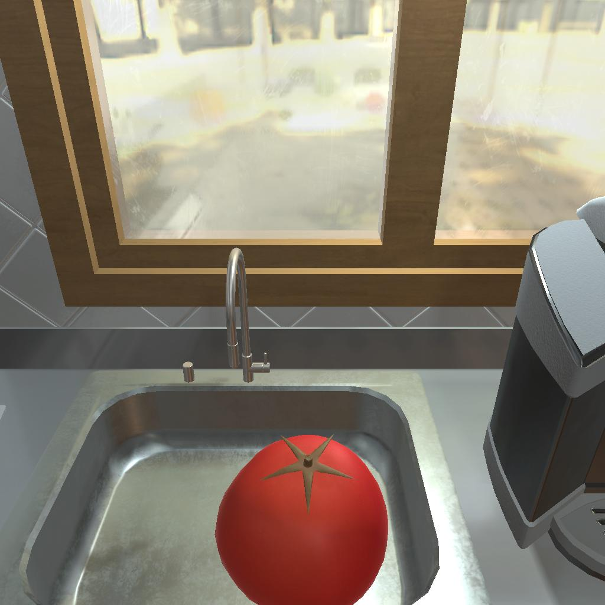

---------------------------------------------------------task: 12---------------------------------------------------------
--------------------------------------------------------------------------------------------------------------------------------------------------------------------
--------------------------------------------------------------------------------------------------------------------------------------------------------------------
Step:--------------------------------------------------------------------------13-------------------------------------------------------------------------------
----------------------------------------
VLM Prompt:
**Task**
Please perform as an embodied AI agent. Our final objective is to clean some tomato and put it in countertop. Below is the plan for completing the task, the current observation, alongside historical data and admissible actions for the next step. Please determine the best action for the next step!
**Plan**
Below is a detailed step-by-step plan to complete the task.
1. Find a tomato.
2. Pick up the tomato.
3. Find a sink or basin.
4. Clean the tomato with the sink or basin.
5. Find a countertop.
6. Place the cleaned tomato on the countertop.
**Current Observation**
Displayed is an image capturing the current position of the agent.
Objects in The Image: ['kitchen sink', 'faucet', 'tomato', 'window', 'garbage bin']
**History Information**
Displayed are the previous observations with their corresponding actions.
State 0:
No history.
State 1:
1. Step Index in the Plan: 1
2. Objects: Kitchen Sink, Faucet, Window, Trash Can, Tile Wall
3. Action: go to fridge 1
State 2:
1. Step Index in the Plan: 1
2. Objects: Magnetic Letters, Refrigerator Handles, Temperature Display, Refrigerator
3. Action: open fridge 1
State 3:
1. Step Index in the Plan: 1
2. Objects: Shelves, Apple, Kiwi
3. Action: go to cabinet 1
State 4:
1. Step Index in the Plan: 1
2. Objects: Cabinet, Cabinet Handle, Light Reflection
3. Action: open cabinet 1
State 5:
2. Step Index in the Plan: 1
3. Objects: Cabinet, Handle, Shelf, Ceiling
4. Action: go to cabinet 3
State 6:
1. Step Index in the Plan: 1
2. Objects: Cabinet, Handle, Shelf, Light Reflection
3. Action: go to cabinet 4
State 7:
1. Step Index in the Plan: 1
2. Objects: Kitchen Cabinet, Cabinet Handles, Backsplash Tiles, Countertop
3. Action: go to cabinet 5
State 8:
1. Step Index in the Plan: Unknown (Currently searching for a tomato)
2. Objects: Cabinet, Countertop
3. Action: open cabinet 5
State 9:
1. Step Index in the Plan: 1
2. Objects: Cabinet, Cabinet Handles, Backsplash Tiles, Countertop
3. Action: go to cabinet 6
State 10:
1. Step Index in the Plan: 1
2. Objects: Cabinet, Handle, Shelf, Ceiling
3. Action: open cabinet 6
State 11:
1. Step Index in the Plan: 1
2. Objects: Cabinet Doors, Handles, Ceiling, Shelf
3. Action: go to countertop 2
State 12:
1. Step Index in the Plan: 1
2. Objects: Microwave, Red Sphere (potential tomato), Knife, Fork
3. Action: take tomato 1 from countertop 2
State 13:
2. Step Index in the Plan: 11
3. Objects: Microwave, Tomato
4. Action: go to sink 1
**Admissible Actions**
(1): go to cabinet 1
(2): go to cabinet 2
(3): go to cabinet 3
(4): go to microwave 1
(5): go to cabinet 4
(6): go to cabinet 5
(7): go to cabinet 6
(8): go to countertop 1
(9): go to coffeemachine 1
(10): go to toaster 1
(11): go to sinkbasin 1
(12): go to fridge 1
(13): put tomato 1 in/on sink 1
(14): clean tomato 1 with sink 1
(15): clean tomato 1 with sinkbasin 1
(16): examine tomato 1
**Analysis Guideline**
1. Analyze the history and current observation, and then determine our current step in the plan and our current place.
2. List all visible objects related to the task in the current observation, without summarizing any as "various items."
3. Analyze the objects in the current observation based on the history and the requirements for the current step, and then determine if we can complete the step with the current observation.
4. Analyze and decide on the most appropriate action to take.
5. Summarize the analysis using the following format: "Analysis: [The summarization of the analysis], The Most Appropriate Action: (i which is the integer.): [Selected action]"
**Notes**
1. We must complete each step of the plan in order and cannot skip steps when the previous ones are not finished.
2. For "Go to" actions listed as "go to xxx [n]", interpret this as there are n distinct actions available: "go to xxx 1", "go to xxx 2", ..., "go to xxx n". Select one specific action from these options instead of using "go to xxx [n]".
3. If receptacles such as drawers, cabinets, and so forth are closed in the current observation, we may try to open them.
4. Pay attention to synonyms and ensure clarity in the terms used.
5. We must determine and provide the single action which must be in the **Admissible Actions**.
6. If there is no history available, we are at the first step and the current place is "Unknown".
**Answer**
Please select the most suitable action by following the **Analysis Guideline**, keeping the above **Notes** in mind.
----------------------------------------
----------------------------------------
VLM Response:
Analysis: The current step in the plan is to clean the tomato, as the previous actions have already involved finding and picking up the tomato, and the agent is now at the sink, which is the location for cleaning the tomato. The objects visible in the current observation are a kitchen sink, a faucet, a tomato, a window, and a garbage bin. There is no need to open any cabinets or go to any other locations to complete the current step. According to the plan, the tomato should now be cleaned. Therefore, the most appropriate action from the admissible actions is to clean the tomato using the sink.
The Most Appropriate Action: (14): clean tomato 1 with sink 1
----------------------------------------
----------------------------------------
>>> Refine VLM Response and Get Pure Action: clean tomato 1 with sink 1
----------------------------------------
-----------------------------------------------------------------
Running time: 11.558414936065674 seconds
Total Money: 0
-----------------------------------------------------------------
-----------------------------------------------------------------
Summarization Prompt:
**Context**
Analysis: Since there is no history information, we are at the first step in the plan, which is to find a statue. The current place is unknown. In the current observation, we see a floorlamp next to an armchair with a small table that has a small object on it, which could potentially be the statue we are looking for. Since the plan requires us to find a statue first and it appears there might be one on the table next to the armchair, we should investigate this object to determine if it is the statue we need.
The Most Appropriate Action: (1): go to armchair 1
**Summary**
1. Step Index in the Plan: 1
2. Objects: Floorlamp, Armchair, Small Table, Small Object (potential statue)
3. Action: go to armchair 1
**Context**
Analysis: The current step in the plan is to clean the tomato, as the previous actions have already involved finding and picking up the tomato, and the agent is now at the sink, which is the location for cleaning the tomato. The objects visible in the current observation are a kitchen sink, a faucet, a tomato, a window, and a garbage bin. There is no need to open any cabinets or go to any other locations to complete the current step. According to the plan, the tomato should now be cleaned. Therefore, the most appropriate action from the admissible actions is to clean the tomato using the sink.
The Most Appropriate Action: (14): clean tomato 1 with sink 1
Please summarize the context by following above examples when providing the summary, and ensure that only the summary is included, without any extra explanation.
**Summary**
-----------------------------------------------------------------
-----------------------------------------------------------------
Summarization Response:
1. Step Index in the Plan: Unknown (presumed to be cleaning stage)
2. Objects: Kitchen Sink, Faucet, Tomato, Window, Garbage Bin
3. Action: clean tomato 1 with sink 1
-----------------------------------------------------------------
-----------------------------------------------------------------
Text Observation:You clean the tomato 1 using the sink 1.
-----------------------------------------------------------------
UNSUCCEED